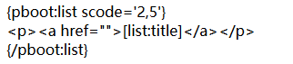
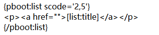

一个列表中调取多个栏目的的内容
作者：admin 时间：2018-10-28 访问量：4189
一、使用场景
1、需要在一个列表中调用多个栏目的内容
2、在首页特殊位置调用多个栏目的置顶、推荐、头条等信息
二、实现方式
利用指定分类列表标签，在scode指定需要调用的栏目编号，用逗号隔开多个，如果多个子栏目，直接用父栏目编码即可

如果我们只想要置顶的那么我们加一个参数 istop=1，类似的推荐、头条等信息

一、使用场景
1、需要在一个列表中调用多个栏目的内容
2、在首页特殊位置调用多个栏目的置顶、推荐、头条等信息
二、实现方式
利用指定分类列表标签，在scode指定需要调用的栏目编号，用逗号隔开多个，如果多个子栏目，直接用父栏目编码即可

如果我们只想要置顶的那么我们加一个参数 istop=1，类似的推荐、头条等信息